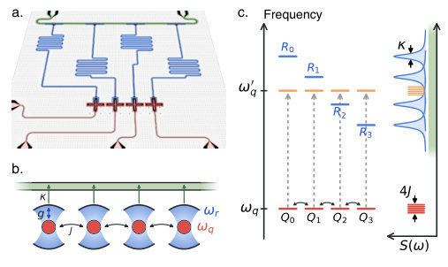

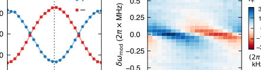
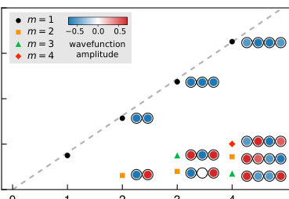
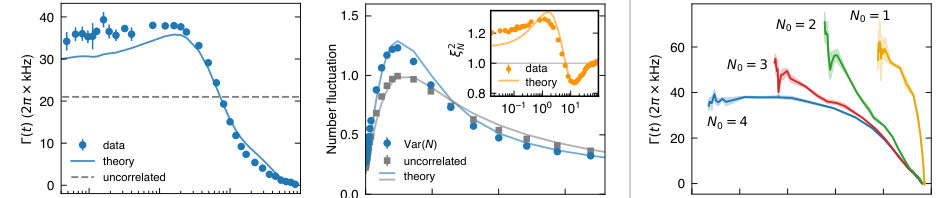
Highlighted author(s): Jonathan Keeling
Authors: Elliot W. Lloyd, Aleksandra A. Ziolkowska, Jonathan Keeling
Type: theory · Category: numerical methods · PDF: https://arxiv.org/pdf/2605.11103v1
Analysis basis: full PDF text, analyzed in chunks
Topic relevance: 🔥 methods for driven-dissipative 5/5 · 🔥 Dicke superradiance 4/5 · 🔥 Tavis-Cummings & cavity-many-emitter 4/5 · quantum measurements 3/5 · superradiant laser 3/5 · correlated cavity matter 2/5 · driven-dissipative phase transition 2/5 · non-equilibrium dynamics 2/5
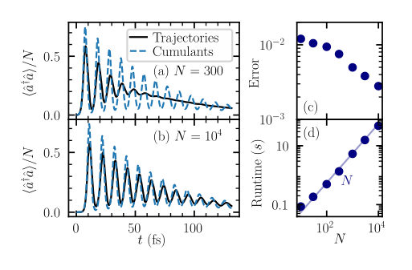
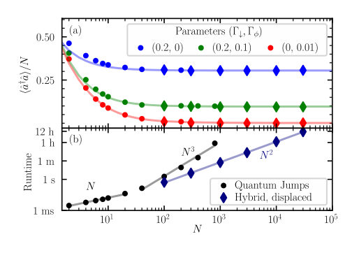
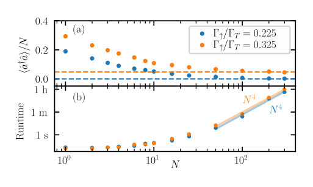
Summary. This paper introduces an efficient numerical method for simulating large ensembles of emitters coupled to a common cavity mode. By exploiting weak permutation symmetry, the authors significantly reduce the computational scaling, allowing for exact quantum simulations of much larger system sizes than traditional density matrix methods.
Why it may be interesting. It provides a powerful new tool for simulating large-scale open quantum systems and cavity QED phenomena that were previously computationally inaccessible due to the presence of individual dissipation.
Main problem. Simulating the exact quantum dynamics of large-scale systems of N emitters coupled to a common mode is computationally expensive due to exponential scaling, especially when individual dissipation breaks strong permutation symmetry.
Main result. The authors developed a stochastic unravelling method that respects weak permutation symmetry, reducing computational complexity from O(N^5) to O(N^2) for 2-level systems and even O(N) with refinements, enabling simulations up to N=10^4.
Method. A permutation-symmetric quantum trajectory approach using a pseudo-state approach, hybrid unravelling (combining quantum jumps and quantum state diffusion), and a displaced approach to reduce cavity truncation requirements.
Model / system. The study focuses on N identical emitters (2-level or d-level systems) coupled to a common bosonic cavity mode, specifically applying the method to the Dicke model, the Tavis-Cummings model, and a three-level lasing model.
Key observables. Photon number, photon number fluctuations, cavity field expectation values, and collective spin operators.
Important parameters / regimes. Number of emitters (N), coupling strength (g), cavity decay rate (kappa), individual dephasing and loss rates, and the dimension of the emitter levels (d).
Assumptions / limitations. The system is assumed to be homogeneous (no disorder) to maintain permutation symmetry, and the cavity dissipation is modeled via a single operator.
Figures summary. Figure 1 compares photon number and run-time scaling for different unravelling methods; Figure 2 shows photon number dynamics and superradiance in the Tavis-Cummings model; Figure 3 demonstrates inversionless lasing in a three-level system.
Paper structure. The paper introduces the problem of scaling in symmetric systems, presents the mathematical framework for 2-level stochastic unravelling, generalizes the method to d-level systems using group theory (Young diagrams/tableaux), and validates the approach with numerical simulations of the Dicke, Tavis-Cummings, and three-level laser models.
We show how one may perform a stochastic unraveling which respects weak permutation symmetry for models of $N$ emitters coupled to a common system (e.g. a cavity mode). For problems involving 2-level emitters, such an unravelling reduces the computational cost from $\mathcal{O}(N^5)$ to $\mathcal{O}(N^2)$, and with additional refinements, allows reduction to $\mathcal{O}(N)$. This significantly increases the range of system sizes for which one can model exact quantum dynamics of such systems. We further show how the method can also be applied to d-level systems, with computational effort scaling as $\mathcal{O}(N^{d(d-1)/2})$, and we show it allows large-N simulations for d=3.
Highlighted author(s): Peter Rabl
Authors: Oliver Diekmann, Enrico Di Benedetto, Nicolas Jungwirth, Daniele De Bernardis, Zeyu Kuang, Francesco Ciccarello, Stefan Rotter, Peter Rabl, Alejandro González-Tudela, Carlos Gonzalez-Ballestero
Type: theory · Category: quantum information and computing · PDF: https://arxiv.org/pdf/2605.12018v1
Analysis basis: full PDF text, analyzed in chunks
Topic relevance: 🔥 correlated / nonlocal dissipation 4/5 · interference shaping light 3/5 · Dicke superradiance 2/5 · Tavis-Cummings & cavity-many-emitter 2/5 · methods for driven-dissipative 2/5
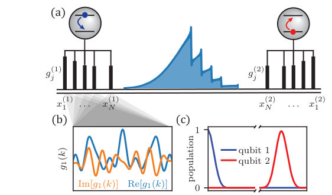
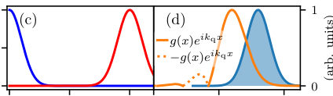
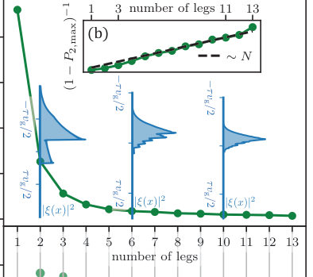
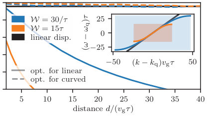
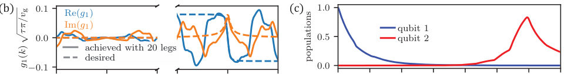
Summary. The paper shows how 'giant atoms' can be used to achieve high-fidelity, passive quantum state transfer by engineering their spatial coupling to create symmetric photon wavepackets. This method works even in the presence of nonlinear dispersion and is robust against experimental disorder, offering a scalable approach for quantum networks.
Why it may be interesting. It provides a blueprint for scalable quantum networks by replacing active, time-dependent control with static, engineered spatial structures, directly relevant to waveguide QED and open quantum systems.
Main problem. Achieving deterministic, passive quantum state transfer between distant qubits in a quantum network without the need for time-dependent active control pulses.
Main result. Demonstrated that giant atoms (emitters with multiple coupling points) can be engineered to emit time-reversal-symmetric wavepackets, enabling high-fidelity state transfer (exceeding 99% with 10+ legs) and robustness against dispersion and disorder.
Method. Used a resolvent operator approach and Laplace transforms to solve the inverse problem of mapping desired qubit decay profiles to wavevector-dependent couplings, combined with numerical optimization of leg positions and strengths.
Model / system. Two giant atoms coupled to a 1D waveguide (or Coupled Cavity Array) with non-local, chiral, or bidirectional coupling, modeled via a Hamiltonian including wavevector-dependent coupling strengths.
Key observables. Excited-state populations, transfer fidelity (P2,max), wavepacket envelope, and pulse shape mismatch.
Important parameters / regimes. Number of coupling points (N), coupling strengths, leg positions, decay timescale (tau), and dispersion nonlinearity.
Assumptions / limitations. Initially assumes chiral coupling (unidirectional) and linear dispersion, though the paper extends to bidirectional and nonlinear cases.
Figures summary. Fig 1: Schematic of giant atoms and evolution of populations; Fig 2: Qubit populations and spatial coupling for different decay types; Fig 3: Scaling of fidelity with the number of legs and pulse shapes; Fig 4: Experimental platforms (SAWs/CCAs) and robustness to positional disorder; Fig 5: Implementation of chiral emission via phase engineering; Fig 6: Optimization of pulse shape mismatch for Gaussian vs. exponential decays.
Paper structure. Introduction to the problem of passive transfer, derivation of analytical conditions in the continuous limit, optimization for finite-leg configurations, analysis of robustness against disorder and nonlinear dispersion, extension to chiral engineering in non-chiral baths, and discussion of experimental platforms.
Achieving quantum state transfer in passive ways can become a powerful asset for scalable quantum networks. Here, we demonstrate how giant atoms coupled to 1D waveguides provide a platform for such a passive, deterministic transfer. Engineering the position and strength of coupling points, we show that the nonlocal interaction can be utilized for the emission of time-reversal-symmetric single-photon wavepackets by spontaneous decay. We first derive general analytical conditions under which arbitrary qubit decays can be mapped to wavevector-dependent couplings that guarantee perfect state transfer in the continuum limit of infinitely many coupling points. Then, for experimentally relevant configurations with a finite number of coupling points, we demonstrate that high transfer fidelities can still be achieved by optimization, reaching 87% with only two coupling points and exceeding 99% with ten or more. We further analyze the robustness of the protocol against disorder in leg positioning and extend the formalism to environments with nonlinear dispersion, showing that dispersion-induced distortions can be fully compensated by judiciously chosen setups. Our results establish giant atoms as a powerful platform for realizing high-fidelity quantum state transfer in a setting without time-dependent control, opening new avenues for scalable quantum networks and engineered light-matter interfaces.
Highlighted author(s): Manuele Landini
Authors: Xudong Yu, Chengyang Wu, Wenhan Chen, Igor Zhuravlev, Zekui Wang, Yi Zeng, Sudipta Dhar, Milena Horvath, Thierry Giamarchi, Manuele Landini, Hanns-Christoph Nägerl, Hepeng Yao, Yanliang Guo
Type: both · Category: quantum gases · PDF: https://arxiv.org/pdf/2605.12322v1
Analysis basis: full PDF text, analyzed in chunks
Topic relevance: 🔥 analog quantum simulation 4/5 · non-equilibrium dynamics 2/5 · entanglement & information structure 1/5
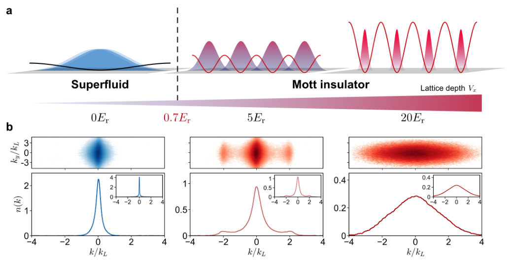
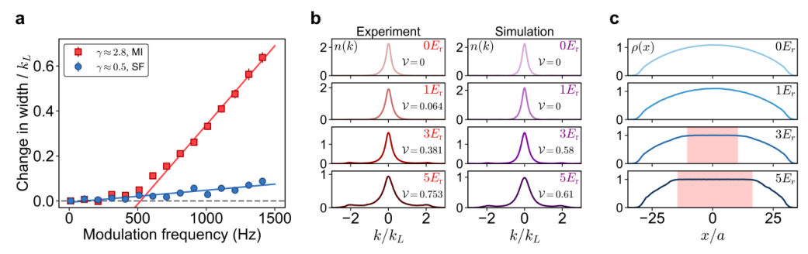
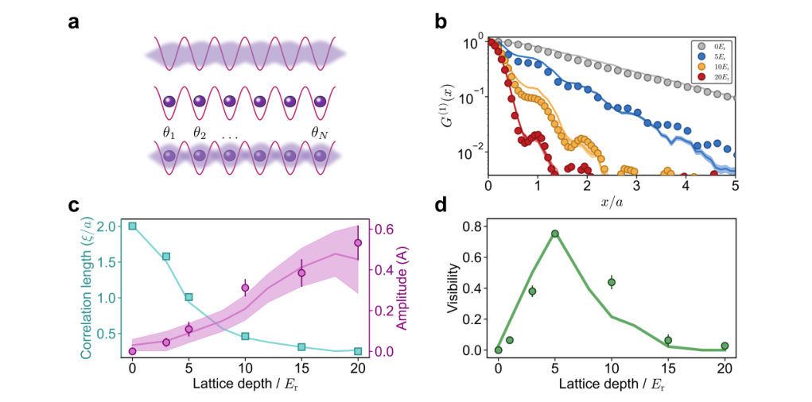
Summary. This paper shows that 1D Mott insulators are not merely collections of localized particles but retain a detectable wave-like coherence. By observing persistent interference peaks in a lattice of 133Cs atoms, the authors demonstrate that the Mott state possesses an intrinsic oscillatory structure. This discovery revises the conventional understanding of the superfluid-to-insulator transition.
Why it may be interesting. It challenges a fundamental diagnostic tool in many-body physics and provides experimental evidence for subleading harmonic structures in 1D quantum fluids, which is highly relevant for understanding many-body dynamics and correlations.
Main problem. Challenging the standard paradigm that the disappearance of interference peaks uniquely diagnoses the transition from a superfluid to a Mott insulator in 1D systems.
Main result. The researchers demonstrate that pronounced interference peaks persist deep in the Mott-insulating regime and actually become stronger as the Mott fraction increases, revealing an unexpected wave-like nature in the insulator.
Method. The study combines experiments with 133Cs atoms in 1D tubes, lattice-modulation spectroscopy, and time-of-flight imaging with Path-integral Quantum Monte Carlo (QMC) simulations.
Model / system. A 1D strongly interacting Bose gas of 133Cs atoms in a shallow optical lattice, described by the Lieb-Liniger model with delta-function interactions.
Key observables. Momentum distribution n(k), interference peak visibility, one-body correlation function G(1)(x), and the excitation energy gap.
Important parameters / regimes. Dimensionless interaction parameter gamma approx 2.8, lattice depth Vx ranging from 0 to 20Er, and the Mott fraction.
Assumptions / limitations. The analysis assumes the system can be described by Haldane's harmonic-fluid theory and uses periodic boundary conditions for the QMC simulations.
Figures summary. The figures show the evolution of the one-body correlation function and its fits across different lattice depths, as well as the momentum distribution and the identification of the Mott gap.
Paper structure. The paper introduces the problem of the SF-MI transition, describes the experimental setup and 1D gas preparation, presents the observation of persistent interference in the Mott phase, provides microscopic evidence via correlation functions, and concludes with a theoretical comparison to QMC and harmonic-fluid models.
Quantum phases of matter are routinely identified by coherence features, with interference patterns being one of the most directly observable quantities. In lattices, the superfluid-to-Mott-insulator (SF-MI) transition is commonly viewed as a change from wave-like coherence to particle-like localization: interference peaks are taken as a hallmark of superfluidity, whereas their disappearance is used to diagnose insulating behavior. Here, we challenge this picture for one-dimensional (1D) strongly interacting gases subject to a lattice potential. We realize a gapped Mott insulator through pinning in a shallow lattice and find that pronounced interference peaks persist deep in the insulating regime. Strikingly, the interference becomes stronger as the Mott fraction increases, demonstrating that a certain degree of coherence still exists in the insulator state. Measurements of the one-body correlation function reveal an oscillatory, exponentially decaying coherence pattern across several lattice sites, in quantitative agreement with quantum Monte Carlo (QMC) simulations. Our work shows that interference does not uniquely diagnose superfluidity and it exposes the unexpected wave nature of a 1D Mott insulator.
Highlighted author(s): Mikhail D. Lukin
Authors: Jiho Sung, Pavel A. Volkov, Ilya Esterlis, Jue Wang, Luke N. Holtzmann, Takashi Taniguchi, Kenji Watanabe, Katayun Barmak, James Hone, Mikhail D. Lukin, Philip Kim, Hongkun Park
Type: both · Category: strongly correlated electrons · PDF: https://arxiv.org/pdf/2605.11249v1
Analysis basis: full PDF text, analyzed in chunks
Topic relevance: spintronics-quantum-optics interface 2/5
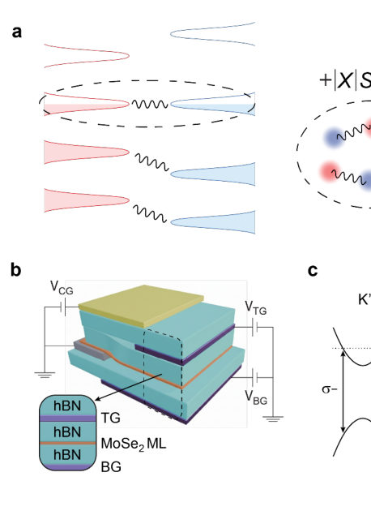
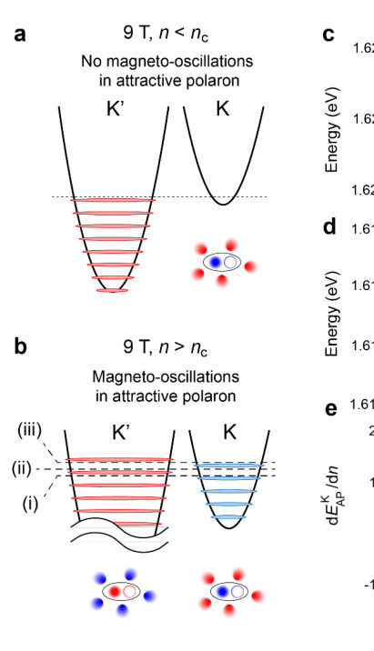
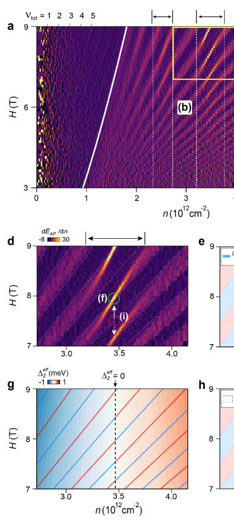
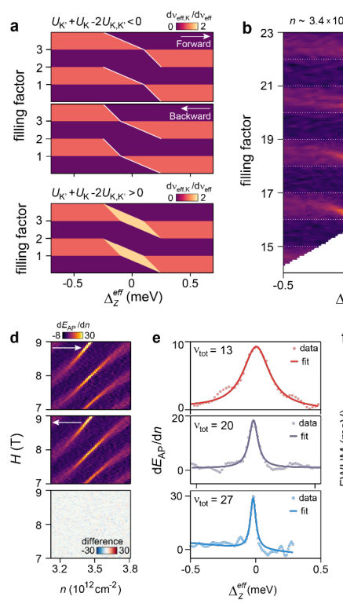
Summary. This paper demonstrates that in strongly interacting MoSe2 monolayers, Landau level crossings result in an unpolarized state driven by antiferromagnetic correlations. This discovery challenges the conventional view of quantum Hall ferromagnetism in the high-interaction regime. The findings provide a new way to understand spin-unpolarized states in correlated electron liquids.
Why it may be interesting. not directly relevant
Main problem. The study aims to understand the nature of quantum Hall magnetism in the limit of strong electron-electron interactions, specifically determining whether Landau level crossings lead to conventional ferromagnetism or unconventional unpolarized states.
Main result. The researchers discovered that Landau level crossings in a MoSe2 monolayer exhibit broadening that indicates antiferromagnetic correlations favoring an unpolarized state, rather than conventional quantum Hall ferromagnetism.
Method. The study uses circularly polarized magneto-optical spectroscopy (reflectance contrast) in a dilution refrigerator, combined with a phenomenological energy minimization model and comparison with Quantum Monte Carlo simulations.
Model / system. The physical system is a strongly interacting MoSe2 monolayer encapsulated in hexagonal boron nitride (hBN) with graphene gates, operating in the high r_s (strong correlation) regime under high perpendicular magnetic fields.
Key observables. Exciton-polaron resonance energies, the derivative of polaron energy with respect to density (dE_AP/dn), and the effective Zeeman splitting (Delta Z_eff).
Important parameters / regimes. High r_s (5-10), high Landau level filling factors (10 < nu < 30), low temperatures (~30 mK), and magnetic fields up to 9 T.
Assumptions / limitations. The analysis assumes that the broadening of the transition is driven by exchange interactions rather than disorder, and uses a phenomenological model for intra- and inter-valley interaction energies.
Figures summary. Fig 1 shows the experimental device and optical selection rules; Fig 2 displays polaron energy oscillations and density-dependent shifts; Fig 3 provides maps of dE_AP/dn and valley-state transitions; Fig 4 compares experimental data with theoretical models of valley filling and density sweeps.
Paper structure. The paper introduces the problem of quantum Hall magnetism, describes the experimental MoSe2 platform, presents spectroscopic evidence of Landau level formation and crossings, analyzes the phase relation of valley-polarized states, and concludes by modeling the observed transitions as antiferromagnetic-like.
Strong magnetic fields quench the kinetic energy of electrons, leading to the formation of flat energy bands, known as Landau levels (LLs). In this situation, even weak interactions can drive the emergence of various ordered phases. The simplest of such phases is a quantum Hall ferromagnet, where a spontaneous spin polarization emerges when LLs with opposite spins cross. The presence of strong electron-electron interaction at zero field changes this picture and makes the resulting states much harder to predict. Here we use magneto-optical spectroscopy to reveal quantum Hall states with unconventional correlations favouring an unpolarized state in the strongly correlated electron liquid in a MoSe2 monolayer. The oscillations of the exciton polaron energies as a function of perpendicular magnetic field and electron density demonstrate the emergence of LLs in a correlated electron liquid and density-dependent crossings between LLs of opposite valleys. On lowering the LL filling factor, where interactions within LLs are stronger, the crossings systematically broaden, indicating an increase in the Zeeman energy required to fully polarize the valley-degenerate LLs. These observations are shown to be consistent with antiferromagnetic interactions between LL electrons, favouring a ground state with zero valley polarization, and are therefore inconsistent with conventional quantum Hall ferromagnetism. This discovery demonstrates a qualitatively distinct form of quantum Hall magnetism in a strongly correlated electron liquid, establishing an anchoring point for understanding spin-unpolarized fractional and ordered states of correlated electrons driven by magnetic field.
Authors: Botao Du, Qihao Guo, Ruichao Ma
Type: experiment · Category: other · PDF: https://arxiv.org/pdf/2605.12442v1
Analysis basis: full PDF text, analyzed in chunks
Topic relevance: 🔥 correlated / nonlocal dissipation 5/5 · 🔥 Dicke superradiance 4/5 · 🔥 QC/QI experiment 4/5 · 🔥 quantum optics experiment 4/5 · Tavis-Cummings & cavity-many-emitter 3/5 · analog quantum simulation 3/5 · correlated cavity matter 3/5 · entanglement & information structure 3/5 · non-equilibrium dynamics 3/5 · driven-dissipative phase transition 2/5 · exotic spin models in light-matter 2/5 · quantum measurements 2/5




Summary. This paper demonstrates a programmable platform for observing superradiance and subradiance in an interacting superconducting qubit array. By controlling the phase of engineered waveguide coupling, the researchers can manipulate collective interference and the spatial structure of many-body correlations. This work establishes a versatile tool for exploring driven-dissipative dynamics in many-body quantum optics.
Why it may be interesting. It provides a rare experimental realization of programmable many-body dissipation, allowing for the direct observation of how coherent interactions compete with collective decay to reshape quantum correlations and energy landscapes.
Main problem. Understanding and controlling the microscopic many-body dynamics and quantum correlations underlying superradiance and subradiance in interacting qubit arrays, specifically moving beyond the idealized Dicke model.
Main result. The researchers demonstrated programmable control over collective decay by tuning the phase of engineered waveguide coupling, revealing that strong qubit-qubit interactions can stabilize super- and subradiant states and reshape decay pathways.
Method. The team used parametric flux modulation to engineer Purcell decay into a 1D microwave waveguide and employed site-resolved readout to track population decay and many-body correlations.
Model / system. A superconducting transmon qubit array coupled to a common 1D microwave waveguide via resonators, where the dynamics are described by a non-Hermitian effective Hamiltonian including nearest-neighbor exchange interactions and engineered collective dissipation.
Key observables. Multi-qubit state populations, emission rate, instantaneous decay rate, number fluctuations, number-squeezing parameter, and transverse/longitudinal spin correlations.
Important parameters / regimes. Engineered decay rate (gamma_wg ~ 15 kHz), coherent interaction strength (J), relative coupling phase (theta = 0 or pi), and the regime where J >> gamma_wg.
Assumptions / limitations. The system is treated in the dispersive limit; higher transmon levels are accounted for via perturbative virtual transitions; the resonator degrees of freedom are adiabatically eliminated.
Figures summary. Figure 1 shows the device layout and waveguide QED model; Figure 2 demonstrates programmable decay and phase control in two qubits; Figure 4 shows the decay dynamics and correlation patterns in a four-qubit array; Figure 5 illustrates the energy spectrum and many-body energy trajectories.
Paper structure. The paper introduces the problem of collective decay in interacting systems, describes the superconducting circuit platform and engineering of dissipation, presents results for two-qubit phase control, extends the study to many-body dynamics and correlations in a four-qubit array, and concludes with a discussion on the implications for driven-dissipative quantum information processing.
When multiple quantum emitters couple to a common electromagnetic environment, interference in their collective radiative dynamics gives rise to superradiance and subradiance. In regimes where coherent interactions and collective dissipation compete, the microscopic many-body dynamics and quantum correlations among the emitters that underlie superradiance and subradiance are theoretically challenging and remain experimentally elusive, even though collective emission has been observed in many physical systems. Here, we realize a superconducting qubit array coupled to a common microwave waveguide that mediates collective dissipation, with simultaneous access to coherent interactions and microscopic measurements of many-body dynamics. Engineered qubit-waveguide couplings with tunable amplitude and phase enable control of collective interference and the resulting super- and subradiant states. Leveraging site-resolved control and readout, we directly observe the microscopic decay dynamics of multi-qubit states across different excitation manifolds and track the evolution of populations and tunable quantum correlations. We reveal collective decay in regimes beyond the ideal Dicke model, where strong qubit-qubit interactions stabilize superradiance and subradiance against local dephasing and reshape decay pathways through spatially and spectrally structured many-body eigenstates. Our results establish a flexible platform for exploring collective phenomena in many-body quantum optics and driven-dissipative approaches to robust quantum information processing.
Authors: Jun-Cheng Liang, Bo Chen
Type: theory · Category: quantum gases · PDF: https://arxiv.org/pdf/2605.11895v1
Analysis basis: full PDF text, analyzed in chunks
Topic relevance: 🔥 non-equilibrium universality 5/5 · 🔥 Keldysh / 2PI / non-Gaussian methods 4/5 · 🔥 non-equilibrium dynamics 4/5 · driven-dissipative phase transition 2/5 · methods for driven-dissipative 2/5 · scars & prethermalization 2/5
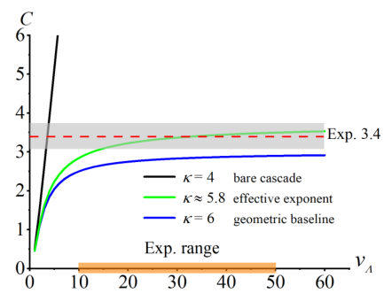
Summary. This paper resolves why the growth of coherence in a non-equilibrium Bose gas has a constant speed limit despite a divergent particle distribution. By introducing the concept of dynamical decoherence, the authors analytically predict a universal value for this speed limit (C=3) that matches experimental observations. This establishes a framework for predicting transport properties in strongly correlated, far-from-equilibrium systems.
Why it may be interesting. It provides a new paradigm for predicting transport coefficients in non-equilibrium many-body systems by using symmetry constraints and dynamical decoherence to achieve quantitative amplitude predictions beyond simple scaling exponents.
Main problem. Resolving the 'ultraviolet divergence paradox' where the predicted growth rate of coherence length in a far-from-equilibrium Bose gas appears to depend on an ultraviolet cutoff, contradicting experimental observations of a constant speed limit.
Main result. The authors provide the first analytical, parameter-free prediction of the universal amplitude C = 3 for the coherence growth speed limit, achieved by showing that dynamical decoherence of high-momentum modes regularizes the ultraviolet divergence.
Method. The study employs Keldysh field theory, dynamic scaling analysis, and a diffusive Langevin equation framework constrained by emergent weak U(1) symmetry.
Model / system. The system is an isolated, far-from-equilibrium Bose gas at a non-thermal fixed point (NTFP), described by the Gross-Pitaevskii Equation (GPE) and characterized by a particle cascade with n(k) ~ k^-4.
Key observables. Coherence length l(t), universal speed limit constant C, phase diffusion coefficient D_phi, and momentum distribution n(k).
Important parameters / regimes. Scaling exponent z=2, healing length xi, characteristic time tau_0, and the dimensionless parameter w = n*xi^3.
Assumptions / limitations. Negligible density fluctuations (delta n << n), spatial homogeneity at scales larger than the healing length, and the existence of an emergent weak U(1) symmetry at the NTFP.
Figures summary. A Feynman diagram illustrating the interaction between coherent and fluctuating modes to show the mechanism of phase randomization.
Paper structure. The paper establishes the GPE as the correct universality class, identifies the UV divergence paradox in the bare cascade, introduces dynamical decoherence and weak U(1) symmetry to regularize the theory, derives the universal amplitude C=3, and validates this against recent experimental data.
Predicting universal transport coefficients in far-from-equilibrium quantum systems remains a fundamental challenge. A paradigmatic example is the non-thermal fixed point (NTFP) of isolated Bose gases, where coherence spreads as $\ell^2(t) = C\hbar t/m$ with a universal constant $C$. While the scaling exponent $z=2$ is well established, the amplitude $C$ has remained elusive because the underlying particle cascade $n(k)\sim k^{-4}$ leads to a divergent kinetic energy, threatening the very existence of a constant speed limit. Here we resolve this paradox and present the first analytical, parameter-free prediction of a universal amplitude $C$. A deep interplay between symmetry and dissipation is uncovered. The emergent weak U(1) symmetry at the NTFP enforces a conserved total current, forcing the low-energy phase dynamics to obey a diffusive Langevin equation with noise entering as the divergence of a stochastic current. This structure, combined with dynamical decoherence of high-momentum modes, yields a universal power-law momentum distribution $\tilde{f}(v)\sim(1+v^2)^{-3}$ (with $v=k\ell$) that naturally regularizes the ultraviolet divergence. From this, a parameter-free geometric baseline $C=3$ is obtained, independent of microscopic details. The experimental value $C=3.4(3)$ [Martirosyan et al., Nature 647, 608 (2025)] is then shown to be quantitatively consistent with universal logarithmic corrections arising from a marginally irrelevant coupling at the fixed point. A new paradigm is thus established for predicting transport coefficients in strongly correlated non-equilibrium systems: symmetry constraints determine the low-energy effective theory, dynamical decoherence provides a natural ultraviolet completion, and scaling analysis delivers testable predictions moving beyond scaling exponents to quantitative amplitude prediction.
Authors: Qihao Guo, Botao Du, Ruichao Ma
Type: experiment · Category: quantum information and computing · PDF: https://arxiv.org/pdf/2605.12429v1
Analysis basis: full PDF text, analyzed in chunks
Topic relevance: 🔥 QC/QI experiment 4/5 · 🔥 correlated / nonlocal dissipation 4/5 · driven-dissipative phase transition 3/5 · entanglement & information structure 3/5 · non-equilibrium dynamics 3/5 · analog quantum simulation 2/5 · correlated cavity matter 2/5 · exotic spin models in light-matter 2/5 · methods for driven-dissipative 2/5 · quantum measurements 2/5 · quantum optics experiment 2/5
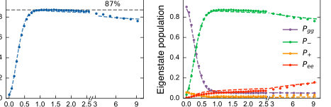
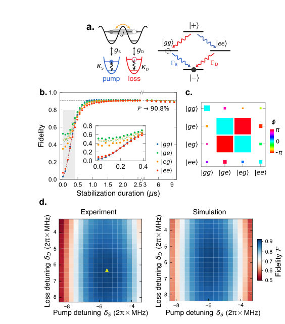
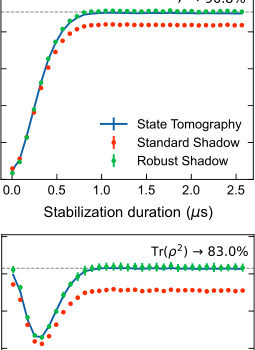
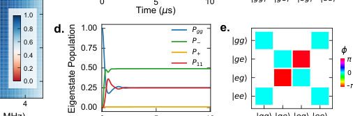
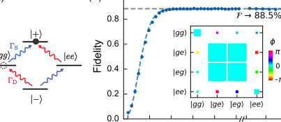
Summary. The paper demonstrates a method to stabilize entangled states in superconducting qubits by engineering local energy-selective reservoirs using parametric drives. It also introduces a noise-resilient classical shadow estimation technique for efficient state characterization. This provides a scalable pathway for preparing correlated many-body states in circuit QED.
Why it may be interesting. This work demonstrates a practical way to use controlled dissipation to drive a system into a target many-body state, which is highly relevant for open quantum systems and the study of non-equilibrium phase transitions.
Main problem. Developing a scalable, hardware-efficient framework for the dissipative preparation and stabilization of entangled many-body states in superconducting circuits.
Main result. The researchers successfully stabilized entangled single-excitation Bell states with fidelities up to 90.8% using engineered local reservoirs and implemented a robust classical shadow estimation method for scalable state characterization.
Method. Engineered dissipation via parametric sideband coupling to readout resonators, combined with robust classical shadow estimation and quantum state tomography for state verification.
Model / system. A 1D array of frequency-tunable transmon qubits coupled to local readout resonators, realizing a hard-core Bose-Hubbard model (equivalent to an XY spin model) with engineered pump and loss reservoirs.
Key observables. State fidelity, purity, eigenstate populations, Pauli observables, and transverse correlations.
Important parameters / regimes. Tunneling J = 2pi x 6 MHz, interaction U = 2pi x -250 MHz, pump/loss coupling g_S/g_D approx 2pi x 0.6-0.7 MHz, and resonator linewidth kappa_r = 2pi x 1.5 MHz.
Assumptions / limitations. Truncation of qubits to two levels, application of the rotating-wave approximation, and neglect of pure dephasing due to strong coherent interaction.
Figures summary. Figure 1 shows the lattice implementation; Figure 4/5/6 display state tomography, population dynamics, and the performance/error analysis of robust classical shadow estimation.
Paper structure. Introduction to engineered dissipation, description of the hardware implementation and reservoir engineering, demonstration of Bell state stabilization, validation of robust shadow estimation, and exploration of shared reservoir interference effects.
Engineered dissipation provides a powerful route to controlling and stabilizing quantum states in open systems. Superconducting circuits are particularly suited to this approach due to their tunable coupling to dissipative environments. Here we realize programmable local reservoirs for superconducting qubits through parametrically driven coupling to readout resonators, creating energy-selective incoherent pump and loss. Using coupled superconducting qubits, we autonomously stabilize entangled single-excitation states with fidelity up to 90.8%. We probe the stabilization dynamics under varying initial conditions and bath parameters, and implement robust classical shadow estimation for accurate and scalable state characterization. Finally, we numerically study a configuration where the engineered pump and loss share a common dissipative mode, leading to reservoir-mediated interference and classically correlated steady states. Our results demonstrate a scalable and hardware-efficient framework for dissipative preparation and control of correlated many-body states in superconducting circuits.
Authors: Jia-jin Feng, Quntao Zhuang
Type: theory · Category: statistical mechanics · PDF: https://arxiv.org/pdf/2605.11751v1
Analysis basis: full PDF text, analyzed in chunks
Topic relevance: 🔥 driven-dissipative phase transition 4/5 · 🔥 entanglement & information structure 4/5 · 🔥 non-equilibrium dynamics 4/5 · 🔥 scars & prethermalization 4/5 · measurement-induced transitions 3/5 · methods for driven-dissipative 3/5 · non-equilibrium universality 3/5 · quantum measurements 2/5
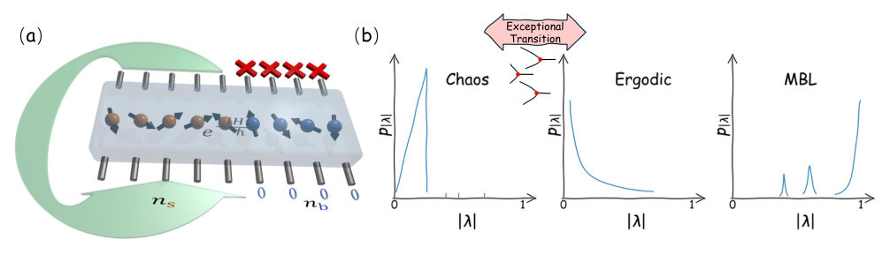

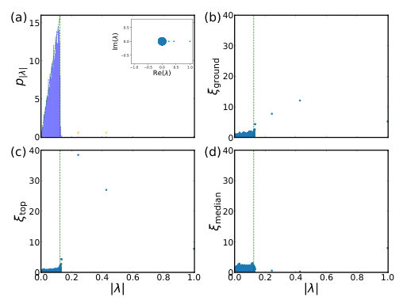
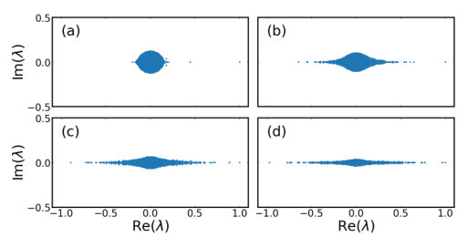
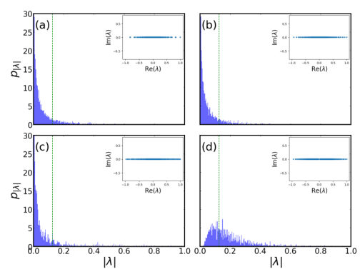
Summary. This paper explores how periodic resetting of a bath in a Floquet system creates non-Hermitian dynamics characterized by exceptional points. It demonstrates that these points drive transitions between symmetry-constrained ergodicity and full chaos, and that the resulting spectrum serves as a diagnostic tool for identifying MBL and many-body scars.
Why it may be interesting. It provides a novel non-Hermitian perspective on many-body dynamics, linking the topological features of the superoperator spectrum (exceptional points) to the physical transition between ergodicity breaking and global chaos.
Main problem. Investigating how exceptional points (EPs) in the non-Hermitian spectrum of reset-driven Floquet quantum channels induce transitions between different dynamical regimes, such as ergodic, chaotic, MBL, and scarred dynamics.
Main result. The authors discover that increasing a chaos-controlling parameter causes real eigenvalues to coalesce at EPs and bifurcate into complex-conjugate pairs, signaling the breaking of symmetry constraints. They also show that the channel spectrum can effectively distinguish between chaotic, ergodic, MBL, and many-body scarred regimes.
Method. The study uses spectral analysis of the Kraus superoperator K, examining eigenvalue distributions (circular law vs. real-axis accumulation), scaling laws near EPs, and rescaled overlap metrics between channel eigenmodes and Hamiltonian eigenstates.
Model / system. A reset-driven Floquet quantum channel consisting of a many-body system (e.g., AAH spin chain or PXP model) and a bath that is periodically measured and reset to a fixed state.
Key observables. Quantum mutual information (QMI), eigenvalue distribution of the superoperator, entanglement entropy, and rescaled overlap metric.
Important parameters / regimes. Chaos-controlling parameter (Jxxx), anisotropy/interaction strength (Jz), and the presence of quasiperiodic potentials (AAH model).
Assumptions / limitations. The evolution is assumed to be long enough to avoid the quantum Zeno regime, and the bath reset is periodic and complete.
Figures summary. Figures include a circuit diagram of the reset process, eigenvalue distributions in the complex plane showing the circular law and outliers, and plots showing the overlap between channel eigenmodes and many-body scar states.
Paper structure. The paper introduces the reset-driven Floquet model, analyzes the spectral transition via exceptional points, explores different dynamical regimes (MBL, scars, chaos), and connects the spectral properties to observable relaxation dynamics via quantum mutual information.
We investigate the spectral structure of reset-driven Floquet quantum channels generated by the Hamiltonian evolution of a many-body system followed by periodic resetting of a bath. By tuning a chaos-controlling parameter in the underlying Hamiltonian, we uncover an exceptional-point-induced spectral transition from a symmetry-constrained ergodic regime to a fully chaotic regime. Across this transition, increasing the chaos parameter causes the real eigenvalues of the channel to drift, coalesce at exceptional points, and bifurcate into complex-conjugate pairs, signaling the progressive breaking of symmetry constraints in operator space. We further show that the channel spectrum sharply distinguishes chaotic, ergodic, many-body localized, and scarred dynamical regimes. Finally, we connect the leading channel eigenvalues to experimentally accessible probes based on quantum mutual information, establishing a link between the spectral organization of reset-driven quantum channels and observable relaxation dynamics.
Authors: Emir Sezik, Gunnar Pruessner
Type: theory · Category: statistical mechanics · PDF: https://arxiv.org/pdf/2605.11892v1
Analysis basis: full PDF text, analyzed in chunks
Topic relevance: 🔥 non-equilibrium universality 4/5 · Keldysh / 2PI / non-Gaussian methods 3/5 · driven-dissipative phase transition 3/5 · non-equilibrium dynamics 3/5 · correlated / nonlocal dissipation 2/5 · methods for driven-dissipative 2/5
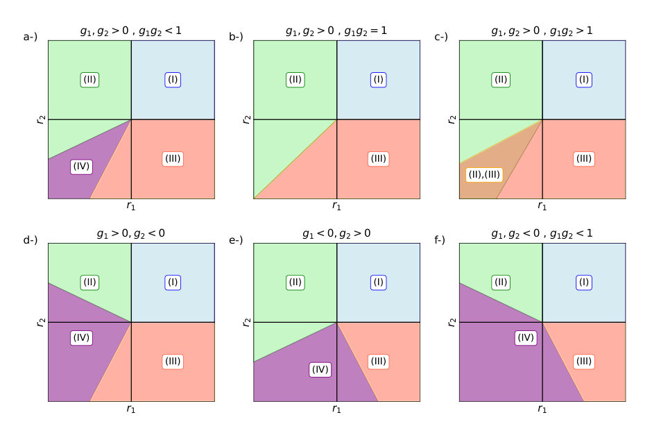
Summary. This paper analyzes the critical dynamics of two coupled conserved fields with non-reciprocal interactions. It shows that while non-reciprocity can lead to non-universal behavior for low component numbers, the system can recover equilibrium-like dynamics for large n. Crucially, it proves that certain scaling relations are preserved by the conserved nature of the dynamics even in the absence of detailed balance.
Why it may be interesting. This is highly relevant for many-body dynamics and open quantum systems, as it explores how non-reciprocal (non-Hermitian-like) interactions drive systems away from equilibrium and whether universal scaling can emerge despite the lack of detailed balance.
Main problem. The study investigates the critical dynamics and universality classes of two-species conserved systems coupled via non-reciprocal interactions, specifically focusing on how non-reciprocity affects scaling behavior and fixed-point stability.
Main result. The authors find that for n >= 4, the system reaches a fixed point that asymptotically obeys detailed balance, while for n < 4, the critical behavior depends on microscopic non-universal parameters. They also demonstrate that the equality of anomalous exponents is a generic feature of conserved dynamics, even when detailed balance is broken.
Method. The study employs field-theoretic renormalization group (RG) analysis, specifically a one-loop perturbative expansion in epsilon (4-d), using the Martin-Siggia-Rose (MSR) formalism and Callan-Symanzik equations.
Model / system. A system of two n-component order parameter vector fields with conserved dynamics (Model B type), where non-reciprocal coupling is introduced through non-linear interactions between the species.
Key observables. Scaling exponents (dynamical exponent z, correlation length exponent nu, and anomalous exponents eta and eta-tilde), correlation functions, and response functions.
Important parameters / regimes. Number of components (n), non-reciprocal coupling ratio (sigma), diffusion coefficient ratio (w), and the epsilon expansion parameter (epsilon).
Assumptions / limitations. The analysis is limited to the one-loop perturbative order; it assumes the existence of stable fixed points and focuses on the upper critical dimension of d=4.
Paper structure. The paper begins with the definition of the non-reciprocal model and its symmetries, proceeds to a mean-field analysis of the phase diagram, performs a one-loop renormalization group calculation to identify fixed points and their stability, and concludes with a discussion on the implications for universality and scaling.
Non-reciprocal systems have been shown to sustain time-dependent patterns, most prominently travelling waves. The transition into these time-dependent states generally breaks time-translational invariance, representing a clear deviation from equilibrium dynamics. Though common implementations of non-reciprocity lead to such phenomenology, these spatio-temporal patterns are absent in other models. In the same vein, the ensuing scaling behaviour also depends on the precise way non-reciprocity is implemented. To better understand the effects of different non-reciprocal interactions, we study the critical conserved dynamics of non-reciprocally coupled spin systems. Specifically, we consider the dynamics of two $n$-component order parameter fields $\boldsymbolφ_i$ with $i \in\{1,2\}$. Unlike the common implementations of non-reciprocal interactions, we introduce the non-reciprocity solely through the non-linear interaction between the distinct species. Using the field-theoretic renormalisation group (RG) procedure, we perform a one-loop analysis and show that at one-loop level, the critical behaviour depends on the microscopic value of certain quantities. Using the flow functions, we elucidate the behaviour of the fixed points for different bare microscopic values. We also show that for $n \geq 4$, there is a fixed point where the ensuing critical dynamics asymptotically obey detailed-balance, implying the emergent dynamics are agnostic to the microscopic non-reciprocity on large scales. Finally, we show that the conserved dynamics reduces the number of independent scaling exponents, mimicking the effect of a standard fluctuation-dissipation relation.
Authors: Ross C. Schofield, Daniel Lim, Himadri S. Dhar, Robert A. Nyman, Akshay K. Verma, Edmund Clarke, Jon Heffernan, Florian Mintert, Rupert F. Oulton
Type: experiment · Category: quantum gases · PDF: https://arxiv.org/pdf/2605.11230v1
Analysis basis: full PDF text, analyzed in chunks
Topic relevance: 🔥 driven-dissipative phase transition 4/5 · 🔥 non-equilibrium universality 4/5 · 🔥 quantum optics experiment 4/5 · non-equilibrium dynamics 3/5
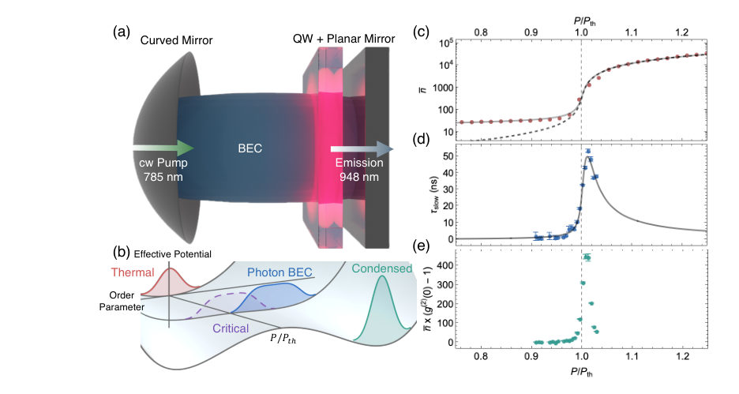
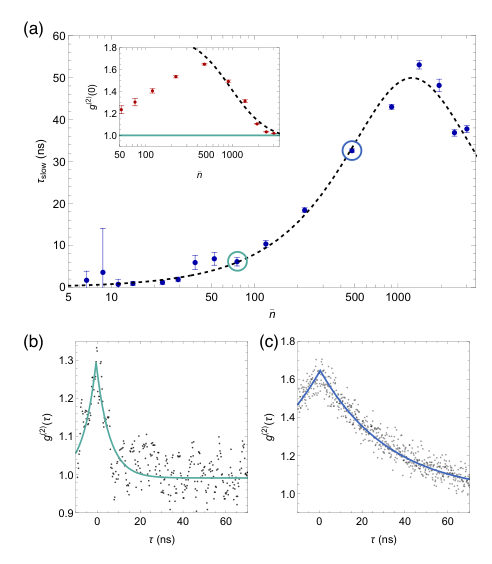
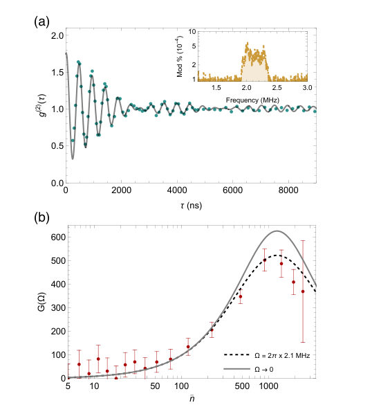
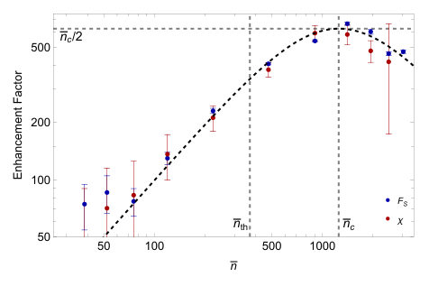
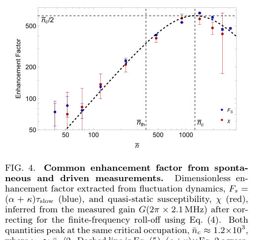
Summary. This paper demonstrates that the link between fluctuations and response, typical of equilibrium phase transitions, holds true for a room-temperature semiconductor photon BEC. By measuring both spontaneous fluctuations and driven response, the authors show they are governed by the same collective mode. This discovery enables the use of photon condensates for highly sensitive, susceptibility-enhanced optical transduction.
Why it may be interesting. It provides a rare experimental verification of the fluctuation-response relation in a non-equilibrium, driven-dissipative many-body system, establishing critical susceptibility as a measurable signature of condensation.
Main problem. Investigating whether the fundamental correspondence between fluctuations and response (criticality) survives in driven-dissipative quantum systems away from thermal equilibrium.
Main result. The study experimentally demonstrates that a single weakly damped collective photon-reservoir mode governs both spontaneous intensity fluctuations and the driven response, with both peaking at the same critical condensate population.
Method. The researchers used second-order intensity correlation measurements g(2)(tau) to access spontaneous fluctuation dynamics and pump-modulation spectroscopy to assess the amplification of weak perturbations.
Model / system. A room-temperature semiconductor photon Bose-Einstein condensate (BEC) in an open microcavity consisting of a planar DBR half-cavity, an InGaAs quantum well, and a concave dielectric mirror.
Key observables. Condensate population (n), fluctuation relaxation time (tau_slow), second-order intensity correlation function g(2)(tau), dimensionless slowing factor (Fs), and quasi-static susceptibility (chi).
Important parameters / regimes. Critical photon number (n_c approx 1250), cavity loss rate (kappa), spontaneous-emission coupling factor (beta), and dimensionless thermalization parameter (gamma_T).
Assumptions / limitations. The analysis utilizes a linear-gain approximation within a Langevin framework and assumes the system is governed by a Landau laser-model-like free energy surface.
Figures summary. Figure 1 contains a schematic of the microcavity structure.
Paper structure. The paper introduces the problem of non-equilibrium criticality, describes the experimental semiconductor microcavity platform, details the measurement of fluctuations and driven response, presents the comparison of the two via scaling laws, and concludes with implications for optical transduction.
Systems close to a phase transition turn weak perturbations into large responses. At equilibrium, this amplification is closely linked to criticality: fluctuations grow, dynamics slow, and a common soft mode controls the response. Whether this correspondence survives in driven-dissipative quantum systems, sustained by continuous pumping and loss away from thermal equilibrium, remains an open question. Here we show experimentally that it does. In a room-temperature semiconductor photon Bose-Einstein condensate, the critical slowing of spontaneous intensity fluctuations and the amplification of weak pump perturbations are measured independently. Both peak at the same condensate population, $\bar{n}_c = 1250$, where the dimensionless slowing factor and susceptibility reach the same value, $\bar{n}_c/2 = 625$. A single weakly damped collective photon-reservoir mode governs both effects. This fluctuation-response correspondence in a finite open quantum gas establishes critical susceptibility as a measurable dynamical signature of condensation, with peak gain set by system size.
Authors: Yu-Meng Ren, Peng-Bo Li
Type: theory · Category: quantum information and computing · PDF: https://arxiv.org/pdf/2605.11457v1
Analysis basis: full PDF text, analyzed in chunks
Topic relevance: 🔥 correlated / nonlocal dissipation 4/5 · entanglement & information structure 3/5 · interference shaping light 2/5 · methods for driven-dissipative 2/5 · non-equilibrium dynamics 2/5
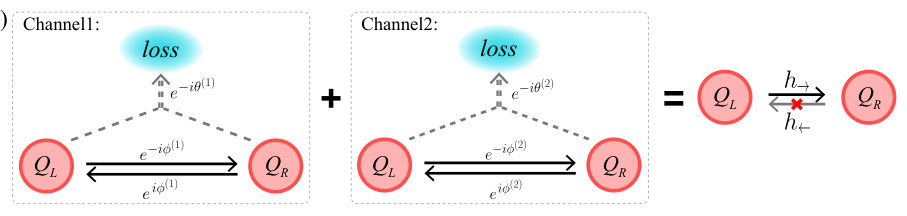
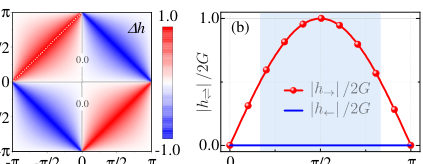
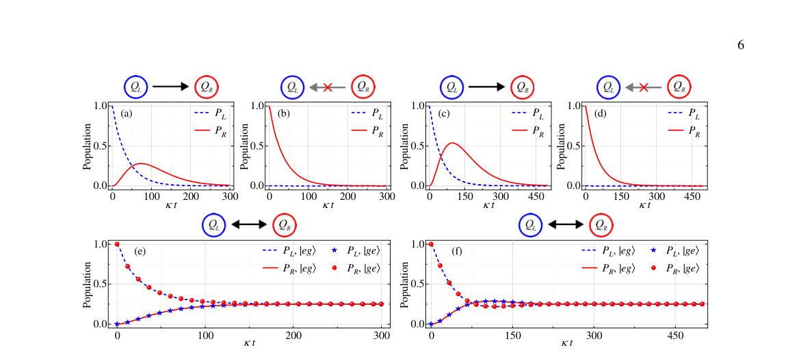
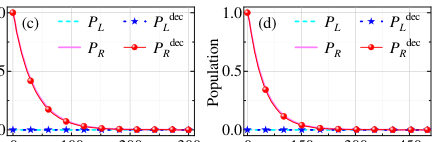
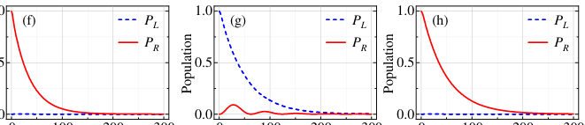
Summary. This paper proposes a method to achieve unidirectional (nonreciprocal) interaction and entanglement between superconducting qubits using loss as a resource. By engineering interference between multiple lossy paths, the authors show that one can create an isolator-like effect without needing bulky magnetic fields. This approach is scalable and robust against typical experimental noise like dephasing and detuning.
Why it may be interesting. It provides a novel perspective on non-Hermitian physics by demonstrating how engineered dissipation and loss-induced phases can break time-reversal symmetry to create unidirectional quantum gates and entanglement.
Main problem. Developing magnetic-free, scalable, and on-chip nonreciprocal devices (isolators/circulators) for superconducting quantum platforms while exploring if loss can be used as a resource for entanglement.
Main result. The authors propose a scheme where loss-induced phase interference in a multi-channel system achieves nonrecipropectivity and nonreciprocal entanglement, demonstrating that loss can be utilized as a resource for quantum networks.
Method. The study uses adiabatic elimination of lossy modes, the Heisenberg-Langevin formalism, and a two-tone flux-modulation protocol to derive an effective non-Hermitian Hamiltonian.
Model / system. A superconducting circuit QED architecture consisting of two remote transmon qubits connected via two lossy auxiliary cavities/waveguides, modeled using a Lindblad master equation.
Key observables. Nonreciprocity (isolation factor), nonreciprocal entanglement (concurrence), and qubit population dynamics.
Important parameters / regimes. Isolation factor (delta h), coherent phase (phi), loss-induced phase (theta), and asymmetric detuning configurations.
Assumptions / limitations. The validity of the effective Hamiltonian relies on the slow-timescale approximation and the ability to average out high-frequency oscillations induced by drives.
Figures summary. Fig 1 shows the schematic and physical implementation of the engineered system; Fig 2/3 illustrate population dynamics and the transition between reciprocal and unidirectional regimes; Fig 4/5 demonstrate the robustness of the scheme against decoherence and detuning; Fig 7 validates the effective model against the full time-dependent model.
Paper structure. The paper introduces the problem of nonreciprocity, presents the engineered multi-channel model, derives the effective Hamiltonian via adiabatic elimination, demonstrates the generation of nonreciprocal entanglement, tests the robustness against experimental imperfections, and validates the implementation via flux modulation.
Losses are ubiquitous in physics and are usually regarded as harmful in quantum information processing. Here, we propose a loss-induced scheme to achieve nonreciprocity and nonreciprocal entanglement in a superconducting platform, where two remote superconducting transmon qubits are connected via two lossy auxiliary cavities. The nonreciprocity in our scheme originates from interference between multiple lossy coupling paths. The coherent phases associated with the qubit-resonator couplings reverse sign under propagation reversal, while the loss-induced phases remain direction independent. Their combined effect leads to different interference conditions in the opposite directions, resulting in unequal effective couplings. We show that this loss-induced scheme can generate nonreciprocal quantum entanglement, indicating that loss can be utilized as a resource. Moreover, the tunability of nonreciprocity and nonreciprocal entanglement in our scheme can be manipulated by the relative phase induced by loss, allowing to tailor both reciprocal and nonreciprocal behaviors. Our results establish a direct link between engineered loss and nonreciprocal entanglement in quantum information processing and offer potential applications in scalable quantum networks.
Authors: Félix Cache, Krithika V. R., Tobias Herzig, Andrej Yu Kuznetsov, Sébastien Pezzagna, Marco Abbarchi, Isabelle Robert-Philip, Jean-Michel Gérard, Guillaume Cassabois, Vincent Jacques, Anaïs Dréau
Type: experiment · Category: quantum information and computing · PDF: https://arxiv.org/pdf/2605.12473v1
Analysis basis: full PDF text, analyzed in chunks
Topic relevance: 🔥 QC/QI experiment 4/5 · quantum optics experiment 3/5 · spintronics-quantum-optics interface 3/5 · quantum measurements 2/5
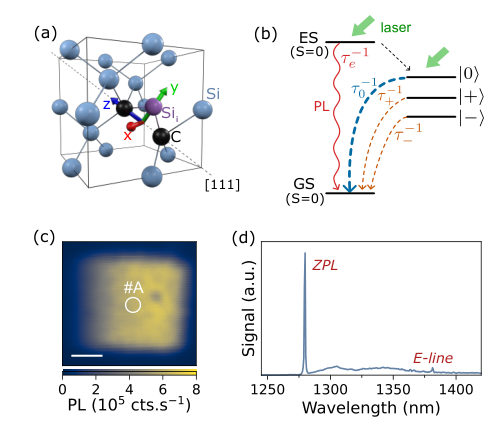
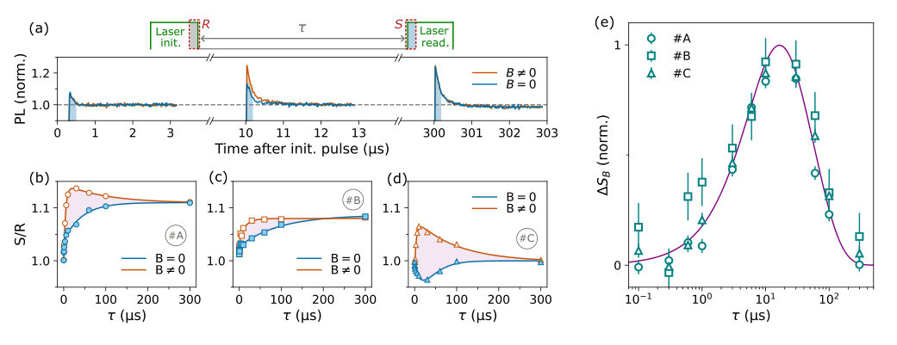
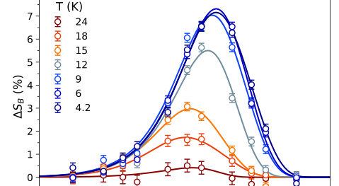
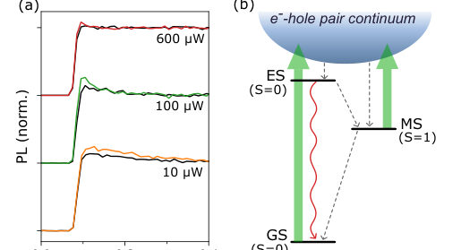
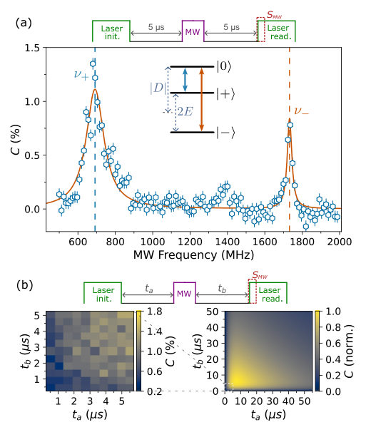
Summary. This paper investigates the electron spin properties of G centers in silicon, demonstrating that their spin states can be optically detected and coherently controlled. By characterizing the spin-dependent lifetimes and decoherence, the study establishes G centers as promising candidates for silicon-based quantum memories and registers.
Why it may be interesting. This work is highly relevant for researchers in quantum optics and open quantum systems as it demonstrates the coherent manipulation of a spin-triplet system and provides detailed insights into spin-dependent relaxation and decoherence mechanisms in a solid-state platform.
Main problem. The study aims to understand the spin-dependent photodynamics, electron spin resonance (ESR) properties, and coherent control of G centers in silicon to evaluate their potential for quantum technologies.
Main result. The researchers demonstrated successful coherent spin control via Rabi oscillations, identified optimal pulse sequences for ODMR readout, and characterized spin-coherence properties, revealing that an electron-spin bath is the primary decoherence source.
Method. The study uses low-temperature confocal microscopy, time-resolved photoluminescence (TRPL), and optically detected magnetic resonance (ODMR) spectroscopy with pulsed laser and microwave sequences.
Model / system. The system consists of ensembles of G centers in silicon (Si:Sii), which are color centers with an S=1 metastable spin-triplet state and an S=0 ground state, described by a zero-field splitting Hamiltonian and a Zeeman term.
Key observables. Photoluminescence (PL) intensity, zero-phonon line (ZPL) at 1279 nm, E-line at 1380 nm, Rabi oscillations, and spin-coherence times (T2*, Techo, T_CPMG).
Important parameters / regimes. Temperature (4-24 K), magnetic field (up to 50 mT), zero-field splitting parameters (D = -1210 MHz, E = 520 MHz), and spin lifetimes (tau_0 approx 2 us, tau_plus/minus approx 40-50 us).
Assumptions / limitations. The study assumes the primary source of dephasing in the ensemble is an electron-spin bath rather than a nuclear-spin bath, as evidenced by the lack of improvement with 28Si purification.
Figures summary. Fig 1 shows the G center structure, energy levels, and PL spectra; Fig 2 displays TRPL traces showing PL peaks for different delays.
Paper structure. The paper introduces the G center system, details the experimental setup and spin-dependent photodynamics, presents the ODMR spectroscopy and optimal readout parameters, demonstrates coherent spin control via Rabi oscillations, and concludes with a discussion on coherence limits and future applications in quantum memory.
Color centers in silicon are emerging as promising platforms for quantum technologies. Among them, the G center has attracted considerable interest owing to its bright telecom O-band single-photon emission and its optically addressable metastable electron-spin triplet state. Here we investigate the spin properties of ensembles of G centers under above-band-gap excitation. We elucidate the spin photo-dynamics giving rise to the optical detected magnetic resonance (ODMR) response of G centers. The optimal pulsed sequence for measuring the ODMR spectrum of the G defects is identified, along with the temperature and optical-power regimes maximizing the spin readout contrast. Through magneto-optical measurements, we detect a level-anticrossing of the G center electron spin states. At last, we demonstrate coherent spin control of the defects, and characterize their spin-coherence properties. Unveiling the spin degree of freedom of the G center opens new avenues for the realization of quantum memories and quantum registers based on silicon color centers.
Authors: Mattia Orlandini, Beatrice Donelli, Lorenzo Buffoni, Stefano Gherardini
Type: theory · Category: statistical mechanics · PDF: https://arxiv.org/pdf/2605.12124v1
Analysis basis: full PDF text, analyzed in chunks
Topic relevance: 🔥 non-equilibrium dynamics 4/5 · non-equilibrium universality 3/5 · driven-dissipative phase transition 2/5 · entanglement & information structure 2/5
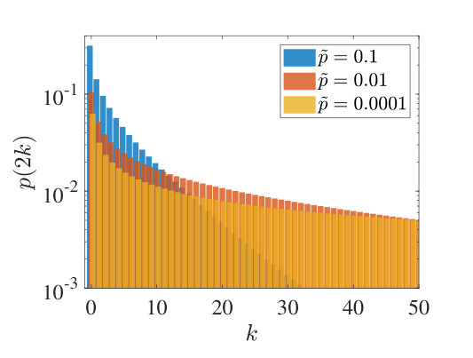
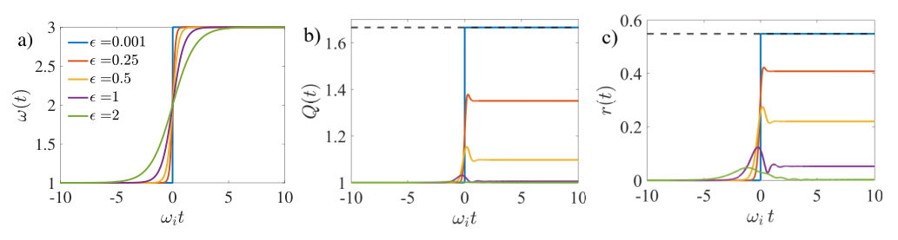
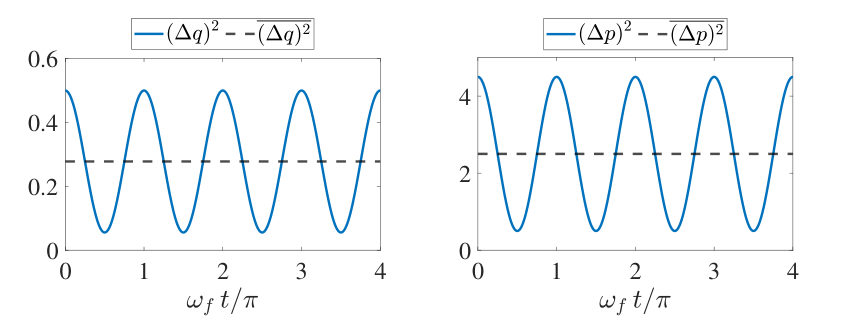
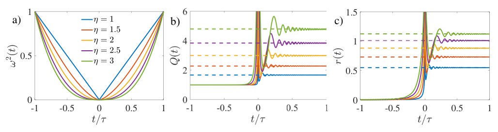
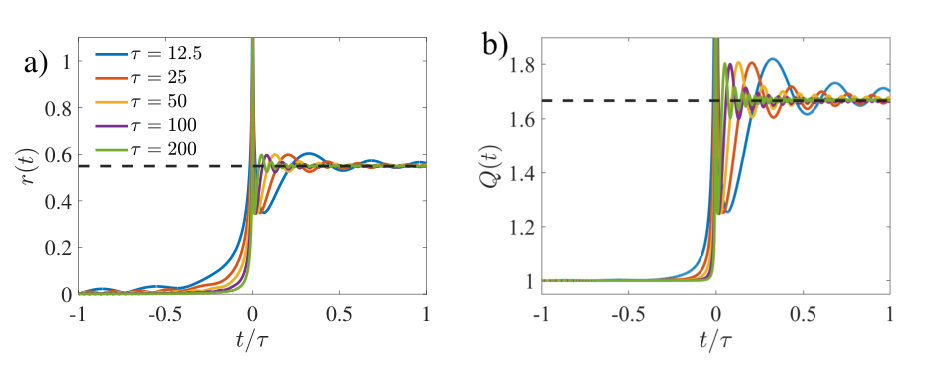
Summary. This review paper provides a unified mathematical framework to describe the dynamics of quantum harmonic oscillators with time-varying frequencies. It proves that the production of non-adiabatic excitations is fundamentally equivalent to the generation of quantum squeezing. The work connects these dynamics to the Kibble-Zurek mechanism and provides exact solutions for various driving protocols.
Why it may be interesting. It provides a comprehensive bridge between mathematical invariant methods and the physical intuition of squeezing, which is highly relevant for understanding non-equilibrium dynamics, quantum control, and phase transitions in many-body systems like the Dicke or Bose-Hubbard models.
Main problem. The paper seeks to provide a unified theoretical framework for understanding the nonequilibrium dynamics of quantum harmonic oscillators with time-dependent frequencies, specifically focusing on the link between adiabaticity breaking and the production of squeezing.
Main result. The authors establish that the dynamical transformation of a time-dependent QHO is exactly a squeezing operator and demonstrate that the breakdown of adiabaticity is directly linked to the generation of squeezing, with scaling laws for excitations following the Kibble-Zurek mechanism.
Method. The study utilizes the Lewis-Riesenfeld invariant method, Bogoliubov transformations, and the Ermakov-Pinney equation to derive exact analytical solutions and relate them to squeezing formalism.
Model / system. A quantum harmonic oscillator (QHO) with a time-dependent frequency omega(t) and potentially a time-dependent mass M(t).
Key observables. Squeezing parameter (r), adiabaticity factor (Q), position and momentum variances, transition amplitudes, and excitation probabilities.
Important parameters / regimes. Frequency protocols (sudden quenches, smooth ramps, linear symmetric quenches), adiabaticity factor Q, squeezing modulus r, and the quench rate delta.
Assumptions / limitations. The invariant is assumed to be Hermitian and without time derivatives; the spectrum is assumed to be discrete; the initial invariant is proportional to the initial Hamiltonian.
Figures summary. Figure 1 shows a negative binomial distribution of excitations; Figure 2 illustrates the correlation between adiabaticity and squeezing; Figure 4 shows the time evolution of frequency, adiabaticity, and squeezing for non-linear quenches; Figure 5 shows the evolution of the squeezing parameter.
Paper structure. The paper begins with a unified treatment of the QHO using Lewis-Riesenfeld invariants and the Ermakov-Pinney equation, moves into the connection between Bogoliubov transformations and squeezing, analyzes specific frequency protocols (quenches and ramps), and concludes with applications to the Kibble-Zurek mechanism and scaling in many-body systems.
The quantum harmonic oscillator with time-dependent frequency is a paradigmatic model of driven quantum dynamics and one of the few nontrivial systems that admits an exact analytical solution. In this review paper, we present a unified treatment of the time-dependent oscillator based on the Lewis-Riesenfeld invariant method, Bogoliubov transformations and the Ermakov-Pinney equation. We show how these approaches naturally connect to squeezing for the description of excitations production, and to the breakdown of adiabaticity under generic frequency protocols. Exact results for sudden quenches and smooth ramps are discussed in detail. By explicitly bridging invariant methods and squeezing formalism, this review is meant to provide a comprehensive framework for understanding nonequilibrium dynamics in quadratic potentials, with applications ranging from thermodynamics and condensed matter to quantum control theory.
Authors: Shintaro Minagawa, Ryo Takakura, Kensei Torii
Type: theory · Category: quantum information and computing · PDF: https://arxiv.org/pdf/2605.11924v1
Analysis basis: full PDF text, analyzed in chunks
Topic relevance: 🔥 quantum measurements 4/5 · correlated / nonlocal dissipation 2/5 · entanglement & information structure 2/5 · methods for driven-dissipative 2/5
Summary. This paper demonstrates that the robustness of quantum channel incompatibility acts as a fundamental lower bound on the error incurred when trying to jointly realize incompatible operations. By doing so, it provides a unified mathematical framework that encompasses Heisenberg-type uncertainty relations and information-disturbance trade-offs. The new bounds are shown to be tighter than existing algebraic bounds in low-dimensional systems.
Why it may be interesting. This work provides a unified, model-independent framework for understanding fundamental quantum limits, which is highly relevant for researchers working on the precision and stability of quantum measurements and open quantum systems.
Main problem. Establishing a quantitative connection between the resource-theoretic strength of quantum channel incompatibility and the fundamental physical trade-offs in their approximate joint realization.
Main result. The authors prove that the generalized robustness of incompatibility (RoI) provides a universal lower bound on the total error of any approximate joint realization of incompatible channels, unifying various uncertainty and no-go theorems.
Method. The study utilizes Semidefinite Programming (SDP), the Choi-Jamiołkowski isomorphism, and Lagrangian duality to derive bounds and quantify the robustness of quantum resources.
Model / system. The framework involves finite-dimensional Hilbert spaces, quantum channels (CPTP maps), and Positive Operator-Valued Measures (POVMs), specifically examining measurement channels and instruments.
Key observables. Generalized Robustness of Incompatibility (RoI), diamond norm error, measurement disturbance, and information-error-disturbance trade-offs.
Important parameters / regimes. Dimension of the Hilbert space (d), approximation errors (epsilon), and the robustness parameter (r).
Assumptions / limitations. The maps are assumed to be Completely Positive and Trace-Preserving (CPTP); the derivation of certain bounds assumes a reference system of dimension equal to the system dimension.
Figures summary. Figure 1 illustrates the approximate joint realization tradeoff with error bounds; Figure 2 compares the new robustness-based bound against the Heinosaari-Miyadera bound, showing it is tighter for low dimensions; Figure 3 compares bounds for a specific 6-element POVM.
Paper structure. The paper introduces the problem of channel incompatibility, presents a universal theorem for joint realization trade-offs, extends these results to measurement uncertainty and information-disturbance relations, and provides a detailed mathematical appendix with SDP derivations and proofs.
Incompatible quantum channels cannot be jointly and exactly realized, meaning that any approximate joint realization inevitably entails a tradeoff in implementation accuracy. While this notion of channel incompatibility unifies fundamental limitations such as measurement uncertainty, the no information without disturbance principle, and the no-cloning and no-broadcasting theorems, connecting these traditional relations directly to the resource-theoretic strength of incompatibility has remained elusive. In this Letter, we show that generalized robustness, a typical resource quantifier of channel incompatibility, lower bounds the total error of any approximate joint realization. Applying this result to measurement channels provides a unified, model-independent framework encompassing error-error and information-error-disturbance tradeoffs. Furthermore, our robustness-based evaluation of disturbance outperforms an algebraic bound for all POVMs in dimensions up to six.
Authors: Zhenqi Xu, Mucheng Guo, Weiye Sun, Pengjun Liang, Zongquan Zhou, Fudong Wang, Shuping Liu, Manjin Zhong
Type: experiment · Category: quantum information and computing · PDF: https://arxiv.org/pdf/2605.11786v1
Analysis basis: full PDF text, analyzed in chunks
Topic relevance: 🔥 QC/QI experiment 4/5 · 🔥 quantum optics experiment 4/5 · spintronics-quantum-optics interface 2/5
Summary. This paper reports the first experimental demonstration of backward retrieval in a Stark-modulated spin-wave quantum memory using Eu3+:Y2SiO5. By using electric field control to suppress noise, the researchers achieved high-fidelity quantum state storage. This approach provides a scalable route toward high-efficiency, long-lived quantum memory nodes.
Why it may be interesting. It demonstrates a practical method for achieving backward retrieval in solid-state systems, which is a key requirement for scalable, high-efficiency quantum networks and avoids fundamental reabsorption limits.
Main problem. Achieving high-efficiency quantum memory retrieval by overcoming the 54% efficiency limit imposed by reabsorption in forward-emission protocols.
Main result. The first experimental realization of backward retrieval in a Stark-echo-modulated spin-wave quantum memory, achieving conditional storage fidelities above 97%.
Method. A Stark-echo (SE) modulation protocol is used in a rare-earth-ion-doped crystal, applying electric field pulses to scramble and rephase ensemble phases to suppress noise.
Model / system. A 0.1% Eu3+:Y2SiO5 crystal cooled to 1.8 K, utilizing the linear Stark effect to control spin-wave dynamics.
Key observables. Conditional storage fidelities, memory efficiency, echo intensity, and coherence dynamics (linewidths).
Important parameters / regimes. Optical depth (d = 1.3), bandwidth (2 MHz), Stark coefficient, and retrieval efficiency (4.8% forward, 0.6% backward).
Assumptions / limitations. The theoretical efficiency model neglects spectral dispersion and inhomogeneous broadening.
Figures summary. Figure 1 shows the experimental setup and protocol; Figure 6(b) illustrates the potential for near-unity efficiency via cavity enhancement.
Paper structure. The paper introduces the challenge of reabsorption, describes the Stark-echo experimental platform and pulse sequence, presents the experimental demonstration of forward and backward retrieval, analyzes noise sources, and concludes with future directions like cavity enhancement.
We report the first experimental realization of backward retrieval in a spin-wave quantum memory based on a Stark-echo-modulated protocol in Eu3+:Y2SiO5. By using Stark control, we preserve the full optical depth of the ensemble while suppressing coherent noise, enabling conditional storage fidelities above 97%. Our analysis shows that the present backward-retrieval efficiency is mainly limited by technical imperfections rather than by fundamental constraints. With realistic engineering improvements, backward retrieval in this protocol could move beyond the reabsorption-limited forward-emission regime. The protocol is also compatible with cavity-enhanced operation, offering an additional route toward higher efficiencies. These findings establish Stark-echo modulation as a practical and scalable route to high-efficiency, long-lived solid-state quantum memories.
Authors: Chandana Rao, Himanshu Sahu, Aranya Bhattacharya, Suhail Ahmad Rather, Mario Flory, Zahra Raissi
Type: theory · Category: quantum information and computing · PDF: https://arxiv.org/pdf/2605.11076v1
Analysis basis: full PDF text, analyzed in chunks
Topic relevance: 🔥 entanglement & information structure 4/5 · non-equilibrium dynamics 3/5 · non-equilibrium universality 2/5
Summary. This paper demonstrates that the internal structure of local quantum gates can significantly alter the speed of entanglement growth and operator spreading in random circuits. By using graph-state blocks, the authors show that entanglement and scrambling velocities are governed by distinct structural features of the gates. This reveals a breakdown of the idea that coarse-grained dynamics are insensitive to the specific details of local gates.
Why it may be interesting. It challenges the assumption of universality in random circuits by showing that microscopic gate details can control macroscopic dynamical rates, which is crucial for understanding information propagation in many-body dynamics.
Main problem. Investigating whether the internal structure of multipartite circuit primitives (local gates) significantly influences coarse-grained dynamical rates like entanglement growth and operator spreading.
Main result. The study finds that different graph-state building blocks lead to varying dynamical rates, where entanglement velocity (vE) correlates with internal entanglement distribution and butterfly velocity (vB) correlates with graph-theoretic connectivity.
Method. Numerical simulations of exactly simulable 1D Clifford quantum circuits using the stabilizer formalism to track entanglement entropy and Out-of-Time-Ordered Correlators (OTOCs).
Model / system. A 1D chain of N qubits evolved by layers of random, non-overlapping n-qubit graph-state preparation unitaries with a tunable sparsity parameter alpha.
Key observables. Entanglement velocity (vE), butterfly velocity (vB), bipartite von Neumann entropy, and Out-of-Time-Ordered Correlators (OTOCs).
Important parameters / regimes. Block size (n), sparsity (alpha), and the local Clifford (LC) equivalence class of the graph-state building blocks.
Assumptions / limitations. The study focuses on Clifford circuits (exactly simulable) rather than Haar-random ensembles, and assumes fixed internal structure for the circuit blocks.
Figures summary. Figure 1 shows the graph-state block and circuit construction; Figure 2 illustrates local complementation; Figure 3 shows LC-inequivalent graph states; Figure 4 shows entanglement growth curves; Figure 5 plots vE vs. entanglement height; Figure 6 shows OTOC spatiotemporal profiles; Figures 8-10 show dependence on sparsity and boundary conditions.
Paper structure. The paper introduces the problem of gate-structure influence, defines the random circuit model using graph-state blocks, introduces structural descriptors (gamma and wp), presents numerical results for various block sizes, and discusses the decoupling of entanglement and scrambling dynamics.
Random circuit models often describe local dynamics using generic two-qubit gates, which have proven successful in capturing entanglement growth and operator spreading in many contexts. This approach naturally leads to the expectation that detailed gate structure plays only a limited role in coarse-grained entanglement and scrambling diagnostics. We show that the internal structure of multipartite circuit primitives can significantly influence these dynamical rates, even within a fixed random-circuit architecture. To investigate this, we study an exactly simulable family of Clifford quantum circuits built from fixed $n$-qubit graph-state preparation unitaries, which we treat as elementary building blocks. Specifically, we consider a one-dimensional chain of $N$ qubits initialized in a product state and evolved by layers in which nonoverlapping length-$n$ blocks are placed at uniformly random positions with sparsity $α$. We find that different choices of graph-state building blocks lead to strongly varying dynamical rates. Graph states that are inequivalent under local Clifford (LC) transformations generate sharply different entanglement velocities $v_E$ and butterfly velocities $v_B$, even though the circuits are drawn from the same ensemble with identical architecture and randomness parameters. We further show that this hierarchy is captured by two complementary block-level characteristics: the distribution of entanglement across internal bipartitions of the graph state, which correlates with $v_E$, and a graph-theoretic connectivity profile across bipartitions, which correlates with $v_B$. Neither descriptor alone fully determines the dynamics; rather, entanglement growth and operator spreading are controlled by distinct structural features of the local circuit blocks. Notably, AME states appear among the fastest scrambling building blocks within the ensembles studied here.
Authors: Shao-Wen Chang, Malte N. Schwarz, Erin G. Moloney, Ke Lin, Dan M. Stamper-Kurn
Type: experiment · Category: quantum gases · PDF: https://arxiv.org/pdf/2605.11597v1
Analysis basis: full PDF text, analyzed in chunks
Topic relevance: 🔥 analog quantum simulation 4/5 · non-equilibrium dynamics 3/5 · quantum measurements 2/5
Summary. This paper presents an experimental method to measure the interband Berry connection in an optical honeycomb lattice using lattice shaking. By observing interband excitations in ultracold fermionic atoms, the authors map out the geometric properties of the bands, including the discovery of Dirac strings. This establishes optical response as a robust tool for characterizing the topology of synthetic lattices.
Why it may be interesting. It demonstrates a powerful technique to use optical-like responses in ultracold atoms to probe the quantum geometry and topological properties of band structures, which is highly relevant to many-body dynamics and synthetic gauge fields.
Main problem. Direct experimental determination of the interband Berry connection and the geometric properties of Bloch bands in a crystalline-like structure.
Main result. The researchers successfully mapped the interband Berry connection in an optical honeycomb lattice, identifying transparency lines and irreducible Dirac strings in the connection between the first and third bands.
Method. Using periodic modulation of the lattice position (lattice shaking) to simulate optical excitation and measuring the resulting interband population depletion via momentum-resolved absorption imaging.
Model / system. A degenerate Fermi gas of 40K atoms in a 2D optical honeycomb lattice created by three intersecting 1064 nm laser beams.
Key observables. Interband excitation probability (fractional depletion), interband Berry connection components (Ax, Ay), and transparency lines.
Important parameters / regimes. Lattice depth V0 = 8.95 ER, shaking frequency 2pi x 3 kHz or 14.35 kHz, and temperature ~ 0.2 TF.
Assumptions / limitations. The validity of first-order perturbation theory for describing lattice-shaking-induced excitations and the assumption that the excitation probability is real.
Figures summary. Fig 1 shows the band structure and lattice setup; Fig 3 displays measured magnitudes of the Berry connection and transparency lines; Fig 4 illustrates the orientation of the Berry connection and the presence of Dirac strings.
Paper structure. The paper introduces the problem of measuring band geometry, describes the experimental setup of the honeycomb lattice, details the lattice-shaking method, presents the mapping of the Berry connection, and discusses the identification of topological features like Dirac strings.
The geometry of Bloch bands affects many physical properties of crystalline solids and other spatially periodic systems. Direct experimental determination of such geometry is an active area of research. In this work, we focus on the fundamental connection between optical excitations and the relative geometry of pairs of Bloch bands, as characterized by the interband Berry connection. We simulate the response of electrons in solids to optical excitation by the response of ultracold fermionic atoms in optical lattices to periodic modulation of the lattice position. The strength of resonant excitation between bands, measured at each quasimomentum and for various lattice-shaking polarizations, directly maps out the interband Berry connection. We apply this method to the optical honeycomb lattice, driving excitations between the ground $n=1$ band and the excited $n'=\{2,3,4\}$ bands. We observe transparency lines of quasimomenta at which the response to excitation of specific polarization is zero. Further, the interband Berry connection between bands 1 and 3 shows irreducible Dirac strings connecting the $K$ and $K'$ points in the Brillouin zone, lines along which the interband Berry connection abruptly changes orientation. Our work establishes optical response as a powerful tool for characterizing geometrical and topological properties of band structure.
Authors: Xhek Turkeshi
Type: theory · Category: numerical methods · PDF: https://arxiv.org/pdf/2605.11150v1
Analysis basis: full PDF text, analyzed in chunks
Topic relevance: 🔥 entanglement & information structure 4/5 · non-equilibrium dynamics 3/5 · methods for driven-dissipative 2/5
Summary. This paper presents a tutorial on Replica Tensor Networks, a method to efficiently calculate averaged quantum information metrics in random circuits. By mapping quantum circuit averages to a classical statistical mechanics model, it enables the simulation of much larger systems than standard methods. The work includes a new C++/Python library, ReplicaTN, for practical implementation.
Why it may be interesting. It provides a powerful tool for studying the dynamics of entanglement, scrambling, and information propagation in many-body systems and noisy quantum devices without the exponential cost of full state-vector simulation.
Main problem. Developing an efficient, numerically stable framework for computing circuit-averaged non-linear quantum information metrics in random quantum circuits.
Main result. The introduction of the Replica Tensor Network (RTN) method and the ReplicaTN library, which allows for the simulation of large-scale random circuits by mapping them to a 2D classical statistical mechanics model.
Method. The replica trick is used to map $k$-degree polynomial observables to a classical tensor network contraction, utilizing Weingarten calculus and a 'dressed' transfer matrix to ensure numerical stability.
Model / system. One-dimensional brickwork random quantum circuits consisting of layers of Haar-random, orthogonal, or Clifford unitary gates acting on $N$ qudits.
Key observables. Inverse Participation Ratio (IPR), Renyi entanglement entropies, Renyi-$k$ local purity, and Cross-Entropy Benchmark (XEB).
Important parameters / regimes. Replica number $k$, local dimension $d$, circuit depth $t$, system size $N$, and noise rate $p$.
Assumptions / limitations. Gates are statistically independent and identically distributed; the method relies on the efficiency of the commutant-basis representation and SVD truncation.
Figures summary. Circuit diagrams of random brickwork; plots showing the approach of participation entropy and local purity to the Haar plateau; and the exponential decay of XEB in noisy circuits.
Paper structure. The notes provide a pedagogical tutorial starting from the formal mapping of circuit averages to classical tensor networks, moving through the mathematical machinery of Weingarten calculus, detailing the numerical implementation of the dressed transfer matrix, and concluding with applications to noise and different gate ensembles.
We present a pedagogical, hands-on tutorial on \emph{replica tensor-network} techniques for random quantum circuits. At its core, the method recasts circuit-averaged observables acting on multiple copies of the system as the contraction of a classical tensor network, equivalently the partition function of a statistical-mechanics model whose effective spins live in the commutant of the gate ensemble. The framework is general: changing the observable or the initial state modifies only the replica boundary conditions, while changing the ensemble modifies the bulk tensors. Focusing on quantum-information diagnostics, from metrics of wavefunction spreadings to entanglement quantifiers, we illustrate the approach in both clean and noisy random unitary circuits. We then briefly explain how the methodology extends to other ensembles, such as orthogonal or Clifford circuits. The lecture notes are accompanied by \texttt{ReplicaTN}, a self-contained C++/Python library and pedagogical notebooks.
Authors: Kaspar Schmerling, Andreas Kugi, Andreas Deutschmann-Olek
Type: theory · Category: quantum information and computing · PDF: https://arxiv.org/pdf/2605.12155v1
Analysis basis: full PDF text, analyzed in chunks
Topic relevance: 🔥 quantum measurements 4/5 · methods for driven-dissipative 3/5 · non-equilibrium dynamics 2/5
Summary. This paper presents an optimal control strategy to minimize the uncertainty in detecting sudden, impulse-like disturbances in Gaussian quantum systems. By dynamically shaping the system's covariance through parametric modulation, the method outperforms traditional periodic squeezing, which can actually hinder detection. The approach is demonstrated to be highly effective for platforms like nanomechanical resonators and levitated nanoparticles.
Why it may be interesting. It provides a novel approach to non-equilibrium state preparation for sensing, showing that standard squeezing protocols are suboptimal for transient disturbances, which is highly relevant for continuous measurement and quantum sensing.
Main problem. Enhancing the estimation of impulse-like disturbances in continuously monitored linear Gaussian quantum systems by optimizing time-dependent system parameters.
Main result. The proposed optimal control strategy reduces estimation uncertainty by up to a factor of two compared to steady-state operation, demonstrating that conventional periodic squeezing can actually degrade impulse estimation.
Method. The authors formulate the minimization of estimation uncertainty as a nonlinear optimal control problem, solved using the IPOPT solver and CasADi framework via a multiple shooting method.
Model / system. The study focuses on Gaussian open quantum systems described by a quadratic Hamiltonian and a Stochastic Master Equation, with specific applications to nanomechanical resonators (NEMS) and levitated nanoparticles.
Key observables. Estimation covariance matrix, impulse magnitude uncertainty, and momentum/position quadrature error covariances.
Important parameters / regimes. Measurement efficiency, measurement rates, damping rate, resonance frequency, and modulation depth constraints.
Assumptions / limitations. The impulse is assumed to be instantaneous (Dirac-like) and occur at a known time, and the system dynamics are assumed to be linear/quadratic (Gaussian).
Figures summary. Figure 1 illustrates covariance ellipse shaping; Figure 2 compares momentum uncertainty in NEMS for optimized vs. rectangular modulation; Figure 3 shows momentum uncertainty evolution and control signals for levitated nanoparticles; Figure 4 details the evolution of forward and backward filtering uncertainties.
Paper structure. The paper introduces the problem of impulse estimation, establishes the Gaussian framework using Kalman-Bucy filtering and retrodiction, presents the optimal control formulation, and validates the method through numerical simulations of NEMS and levitated nanoparticles.
We present an optimal control-based strategy to enhance the estimation of impulse-like disturbances in continuously monitored linear classical and quantum systems by exploiting non-equilibrium states. Using optimal estimation techniques for linear Gaussian systems to collect information from the temporal vicinity of the disturbance, we cast the minimization of disturbance estimation uncertainty as a nonlinear optimal control problem over time-dependent system parameters. The resulting method dynamically shapes the estimation covariances through parametric modulation, maximizing information gain at a known impulse time. This differs fundamentally from conventional squeezing protocols using periodic modulation that effectively degrade inference of impulse-like disturbances. Applied to nanomechanical resonators and levitated nanoparticles, optimal parametric driving reduces estimation variance by up to a factor of two relative to steady-state operation
Authors: Daisuke Yamauchi, Haruna Katayama, Norihiro Tanahashi
Type: theory · Category: other · PDF: https://arxiv.org/pdf/2605.11565v1
Analysis basis: full PDF text, analyzed in chunks
Topic relevance: 🔥 analog quantum simulation 4/5 · driven-dissipative phase transition 2/5 · non-equilibrium dynamics 2/5
Summary. This paper explores the stability and quasi-normal ringing of analogue black-white holes implemented in SNAIL-based traveling-wave parametric amplifiers. By mapping the circuit dynamics to KdV and mKdV equations, the authors show the system is stable and provide a scaling law for the frequency of the characteristic ringdown signal.
Why it may be interesting. This paper is interesting for researchers in quantum optics and open quantum systems because it demonstrates how superconducting circuit architectures can be used as an analogue platform to study complex gravitational phenomena like event horizons and ringdown.
Main problem. The study investigates the perturbative stability and the quasi-normal mode (QNM) frequencies of analogue black-white hole systems in a superconducting circuit platform.
Main result. The authors prove the system is perturbatively stable using supersymmetric quantum mechanics and find that the fundamental QNM frequency scales with the physical parameter beta_phys approximately as |Omega| proportional to beta_phys^0.7.
Method. The study employs the reductive perturbation method to derive KdV/mKdV equations, uses supersymmetric quantum mechanics for stability analysis, and applies WKB approximations and the shooting method for QNM frequency calculation.
Model / system. The system is a traveling-wave parametric amplifier (TWPA) based on SNAIL superconducting nonlinear elements, where soliton solutions create an effective causal structure analogous to event horizons.
Key observables. Quasi-normal mode (QNM) frequencies (Omega), stability (absence of negative modes), and the timescale of nonlinear dispersion.
Important parameters / regimes. The normalized relative velocity (beta_phys), nonlinear coefficients (c3, c4), and the soliton half-width (w_phys).
Assumptions / limitations. The analysis assumes a continuum limit, neglects higher-derivative nonlinear dispersion terms in certain regimes, and assumes the soliton amplitude is small enough for the reductive perturbation method to hold.
Figures summary. Figure 1 shows the SNAIL element and TWPA setup; Figure 2 compares different soliton shapes; Figure 3 displays effective potentials and probe field velocity; Figure 4 compares WKB orders against numerical results; Figure 5 shows WKB correction terms; Figure 6 shows the distribution of QNM roots in the complex plane.
Paper structure. The paper introduces the SNAIL-TWPA system, derives the nonlinear wave equations and effective potentials, performs stability analysis via SUSY quantum mechanics, calculates QNM frequencies using WKB and numerical shooting methods, and discusses the validity of the approximations.
The circuit dynamics constructed by traveling-wave parametric amplifiers (TWPA), using superconducting nonlinear asymmetric elements (SNAILs), are known to be approximately described by the Korteweg-de Vries (KdV) or modified KdV equations in the continuum limit and admit soliton solutions. The soliton spatially modulates the effective propagation velocity of the weak probe field, which leads to the effective realization of the causal structure of the analogue event horizons in the SNAIL-TWPA circuit system. In this paper, we derive the master equation for the weak probe field where the background soliton acts as an effective potential. We show the absence of normalizable negative modes in the SNAIL-TWPA circuit system by using the language of supersymmetric quantum mechanics. We also present the first study of quasi-normal modes (QNM) of the SNAIL-TWPA analogue black-white hole system by semi-analytic and numerical methods. Based on the resultant QNM frequency, we clarify the timescale at which nonlinear dispersion becomes effective in the SNAIL-TWPA circuit system and demonstrate how ringdown is excited.